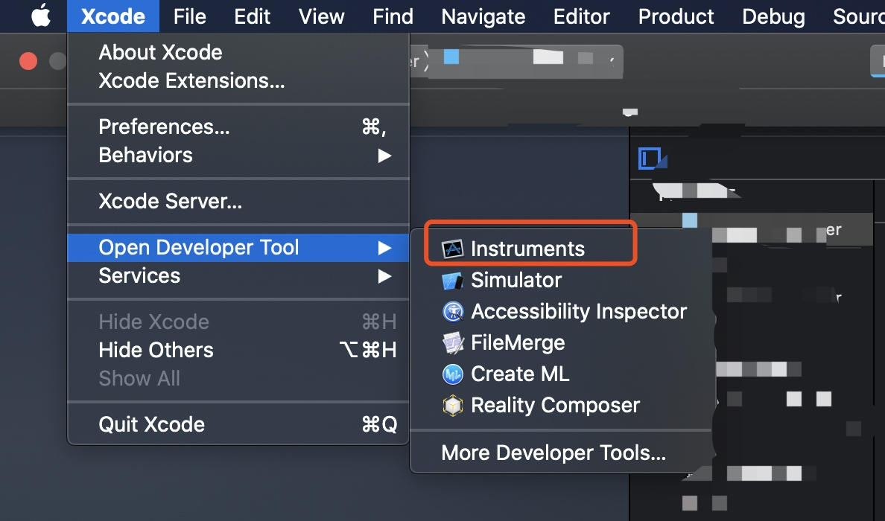
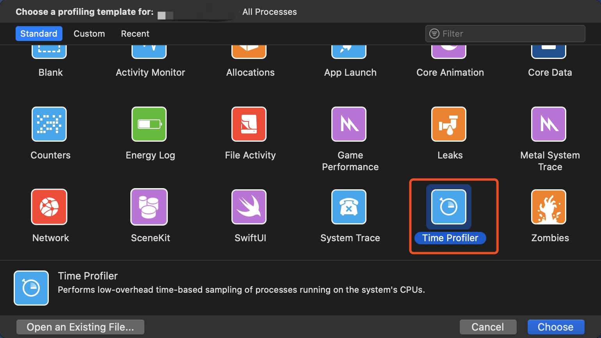
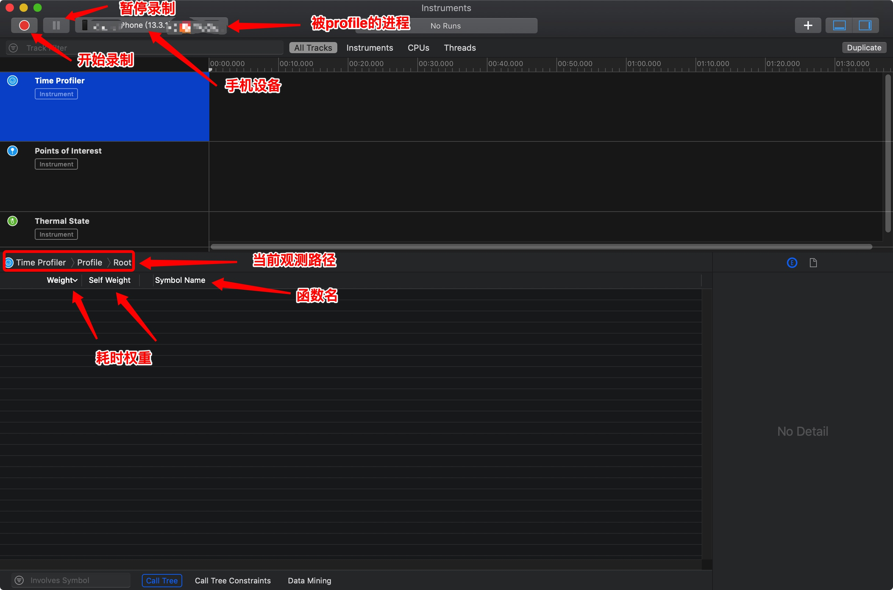
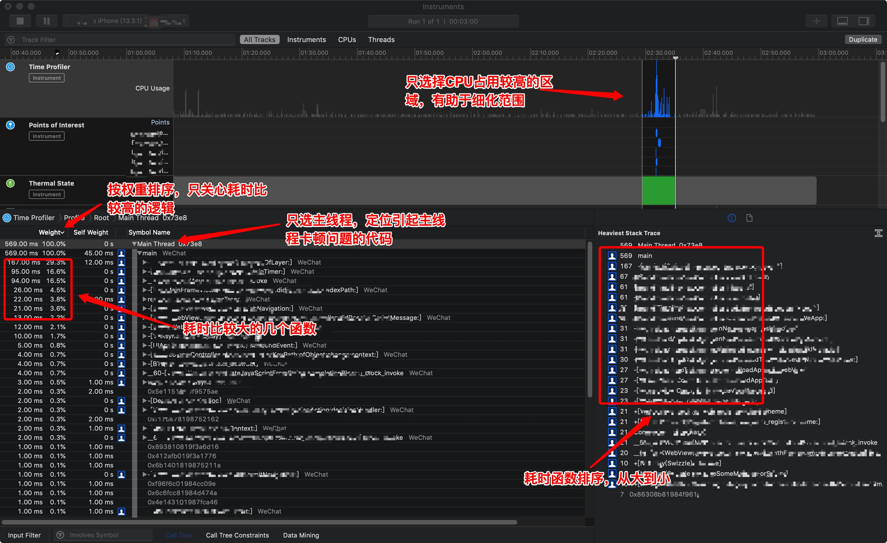
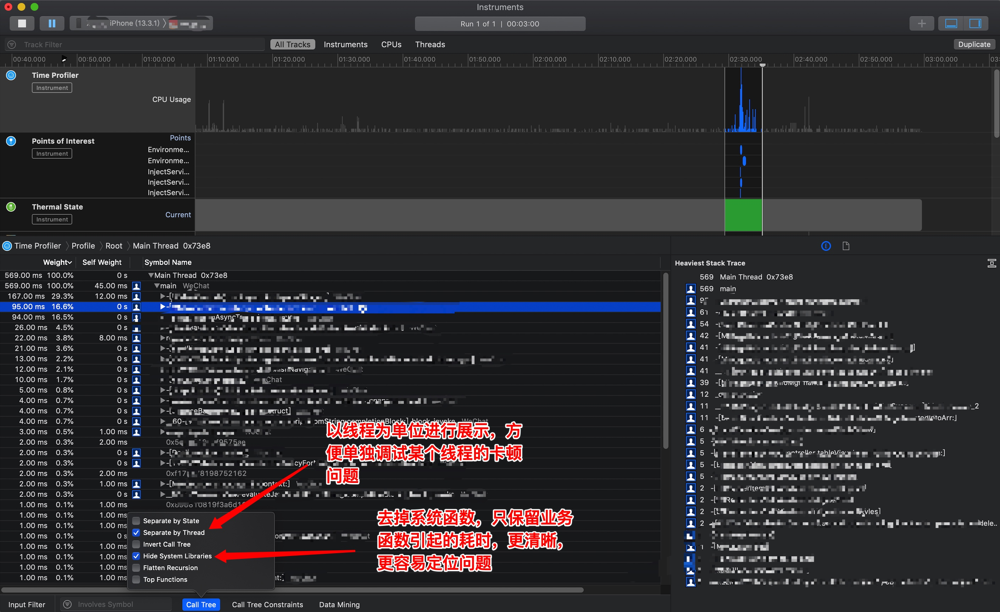

iOS 性能调优 - 耗时分析
耗时是性能的重要指标
为了更好的性能和体验，开发中对每个函数的耗时要有一定的把控，特别是主线程，函数的执行时间要严格控制，否则会引起主线程卡顿，影响用户体验。
当软件发生卡顿时，就需要分析耗时，定位引发性能的函数，进而分析和优化。
耗时分析肯定不是挨个函数打 log，不然一天调试一个 bug，老板怎么给你算工资。
iOS 中可以用 xCode 自带的分析工具「Time Profiler」。它可以自动分析你手机上运行的软件的线程运行情况、函数执行耗时、CPU 占用情况等等。
如果你不熟悉 Instruments，或者遇到了无符号、手机连不上等各类问题，建议先看看 XCode Instruments 使用。
打开 Time Profile


Time Profile 界面主要操作说明

Profile 结果分析
点击开始，然后操作软件，操作完毕点击停止。鼠标选中CPU占用较高的一部分，然后面板下侧会出现详细的分析结果。

有个技巧，引起卡顿一般是业务代码引起的，系统逻辑一般不会有问题，所以我们直接把系统的调用隐藏，函数会更少更清晰。

转载请注明出处：iOS 性能调优 - 耗时分析 - 专业点
欢迎关注我的公众号

推荐

公众号推荐
欢迎关注我的公众号一起愉快的交流。